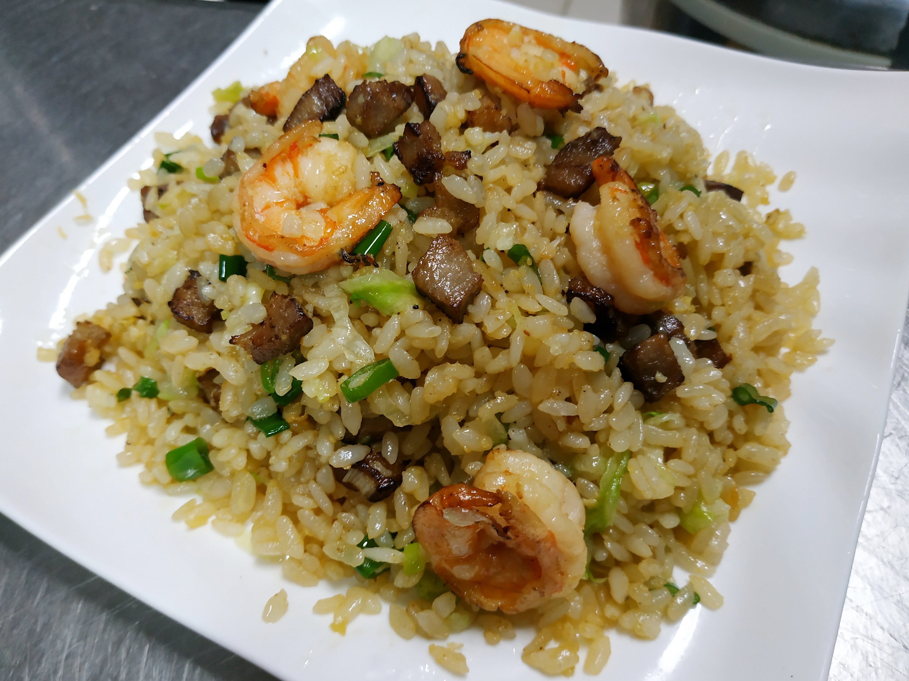

Yangzhou Fried Rice

The city of Yangzhou in eastern Jiangsu Province is one of the ancient centers of Chinese gastronomy and the heartland of what is known as Huaiyang Cuisine. Strangely, only one of its dishes is widely known in the West and that is Yangzhou fried rice, which is on the menu of almost every overseas Cantonese restaurant. A colorful mixture of fragrant rice with diced meat, seafood and vegetables, it traditionally includes a little sea cucumber and crab meat as well as fresh bamboo shoots. Many versions, even some of those cooked up in Yangzhou itself, make this dish as a simple fried rice, but the classic recipe, upon which mine is based, includes an injection of chicken stock that adds an extra deliciousness. I have omitted hard-to-find ingredients, such as sea cucumber.
Don’t worry if you don’t have every ingredient: the key is to have a tempting selection of colors and tastes amid the rice. There’s no need to weigh them exactly; just aim to have a small pile (about 3 tbsp when chopped) of each.Yangzhou fried rice can be served as part of a special Chinese meal, or as a whole meal in itself, perhaps with simply a salad or a lightly cooked green vegetable on the side (Spinach in Ginger Sauce would be perfect).
This quantity serves four as a main dish, or more as part of a Chinese meal.
Ingredients
- ½ oz (25g) raw pork fillet
- ½ oz (25g) ham or salami
- ½ oz (25g) cold, cooked chicken
- 2 dried shiitake mushrooms, soaked in hot water for 30 minutes, stalks discarded
- ½ oz (25g) bamboo shoot (optional)
- 3 spring onions, green parts only
- 1 egg, plus 1 egg yolk (optional)
- Salt
- Ground white pepper
- 5 tbsp cooking oil
- ½ oz (25g) small peeled shrimp, fresh or frozen, cooked or uncooked
- ½ oz (25g) fresh or frozen peas, peeled fava beans or cooked green soy beans
- 2 tsp Shaoxing wine
- ¾ cup (200ml) chicken stock
- 3 cups (600g) cooked, cooled Thai fragrant rice (1½ cups/300g when raw)
Instructions
- Cut the pork, ham or salami, chicken, soaked mushooms and bamboo shoot, if using, into small dice. Finely slice the spring onion greens. Beat the egg with salt and pepper to taste (add an extra yolk if you wish to give the cooked egg an intense yellow color).
- Heat 2 tbsp oil in a seasoned wok over a high flame. Add the raw pork and shrimp and stir-fry briefly, until the pork is pale. Add the ham, chicken, mushrooms, peas or beans and bamboo shoot, if using, and continue to stir-fry for a minute or two, until everything is hot and sizzling. Add the Shaoxing wine, then pour in the stock and bring to a boil. Season with salt to taste, then pour into a bowl.
- Rinse and dry the wok. Return it to the heat with the remaining oil. When the oil is hot, add the beaten egg mixture and swirl around the base of the wok. When the egg is half-cooked, add all the rice and stir-fry, using your ladle or wok scoop to break up any lumps.
- When the rice is very hot and smells delicious (it will make a popping sound around the edges at this stage), add the bowlful of prepared ingredients in their stock sauce. Mix well and continue to stir-fry for another 30 seconds or so, seasoning with salt or pepper if you wish. Finally, stir in the spring onion greens and serve.